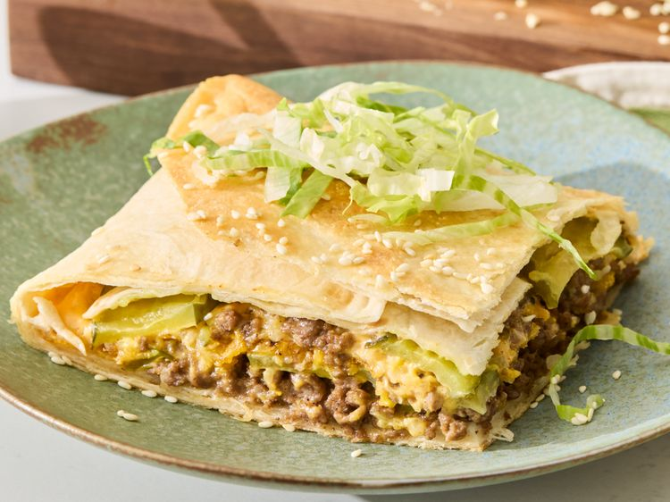

Big Mac Crunchwrap

Description
If you love the iconic flavors of a Big Mac, this hearty Crunchwrap Casserole delivers everything you crave in a fun, family-style bake. Layers of seasoned beef, melty American cheese, crunchy tostadas, tangy pickles, and creamy special sauce are wrapped in tortillas and baked until golden and crispy.
Ingredients
Big Mac Sauce
- 1 cup mayonnaise
- 2 tablespoons yellow mustard
- 2 tablespoons sweet pickle relish
- 2 tablespoons grated onion
- 1 tablespoon white vinegar
- 1 teaspoon garlic powder
- 1 teaspoon onion powder
- 1 teaspoon paprika
- 1 teaspoon sugar
Casserole
- 1 1/2 pounds extra-lean ground beef (93% lean)
- 1/2 teaspoon garlic powder
- 1/2 teaspoon black pepper
- 2 tablespoons diced minced onion
- 6 (10-inch) flour tortillas
- 12 slices American cheese
- 1 (16-ounce) jar crinkle-cut dill pickles, drained (about 1 1/2 cups)
- 4 tostada shells
- 2 tablespoons butter, melted
- 1 cup shredded lettuce
- 1/2 cup Big Mac sauce (see above), plus more for topping
- Sesame seeds
Steps
- Preheat the oven to 375 degrees F (190 degrees C)
- Lightly grease a 9x13-inch baking dish
- For Big Mac sauce, whisk together mayonnaise, mustard, relish, grated onion, vinegar, garlic powder, onion powder, paprika, and sugar in a medium bowl until smooth
- Set aside Big Mac sauce
- Heat a large skillet over medium heat
- Add ground beef, garlic powder, and black pepper
- Cook, breaking up meat into crumbles, until browned, 7 to 8 minutes
- Drain excess grease; set aside
- Meanwhile, place dried minced onion in a small bowl and cover with warm water
- Let stand 5 minutes
- Drain well and set aside
- Arrange flour tortillas in the prepared baking dish, allowing them to hang halfway over the edges and fully cover the bottom of the baking dish
- Spread half of the cooked beef evenly over tortillas
- Sprinkle with half of the hydrated onions and top with 6 slices American cheese
- Arrange half of the pickle slices evenly over cheese
- Place tostada shells over pickles, breaking as needed to fit in an even layer
- Spread 1/2 cup sauce evenly over tostada shells
- Repeat layers once with remaining beef, onions, cheese, and pickles
- Fold flour tortillas over the top to fully enclose the filling
- Brush the top with melted butter
- Bake until tortillas are golden brown and crisp and filling is heated through, about 30 minutes
- Let stand for 5 minutes
- Place a large cutting board over the baking dish and carefully invert the casserole onto the cutting board
- Top with shredded lettuce, drizzle with some of the additional Big Mac sauce, and sprinkle with sesame seeds just before serving
- Serve with remaining Big Mac sauce